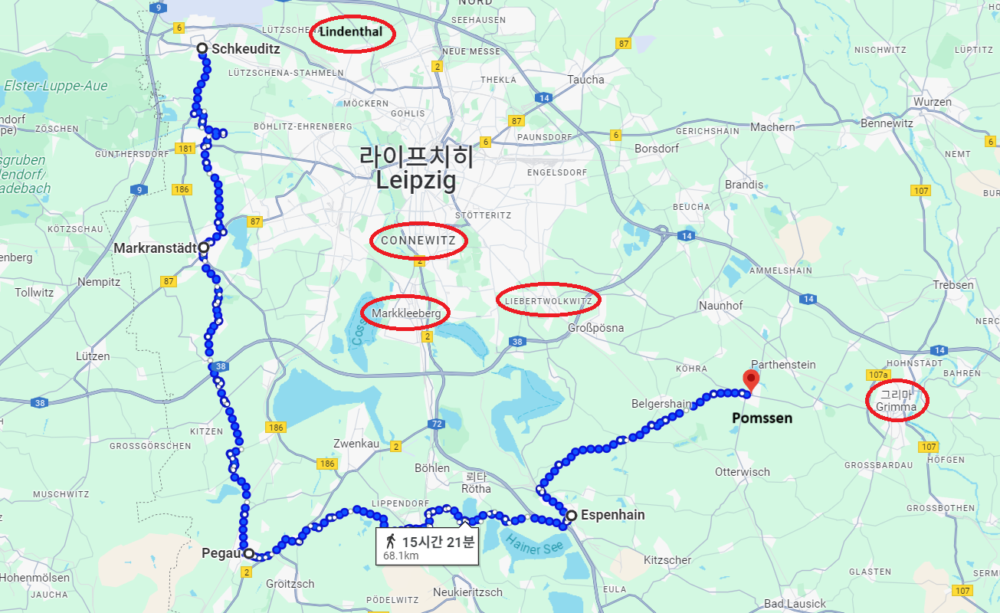
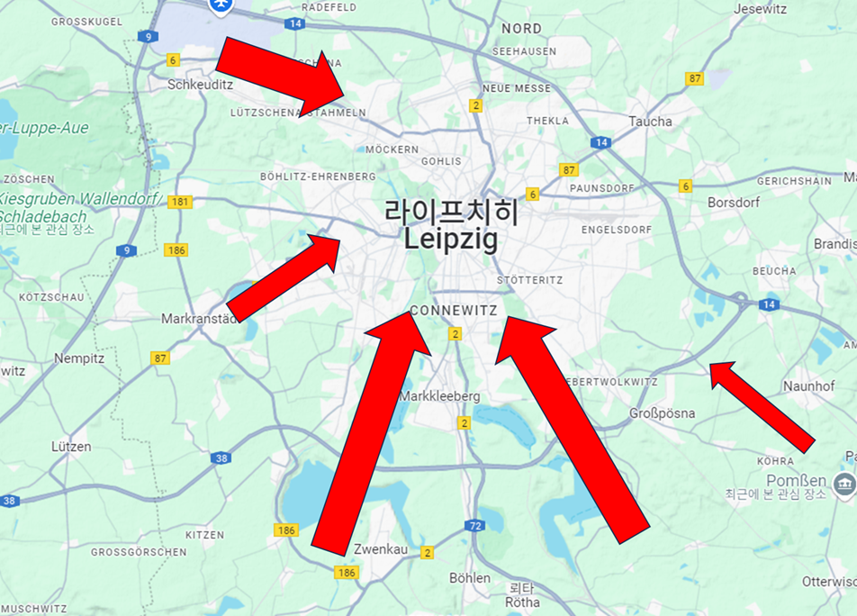
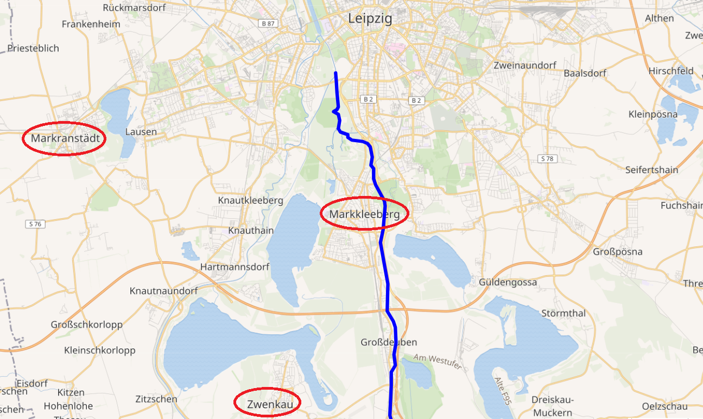
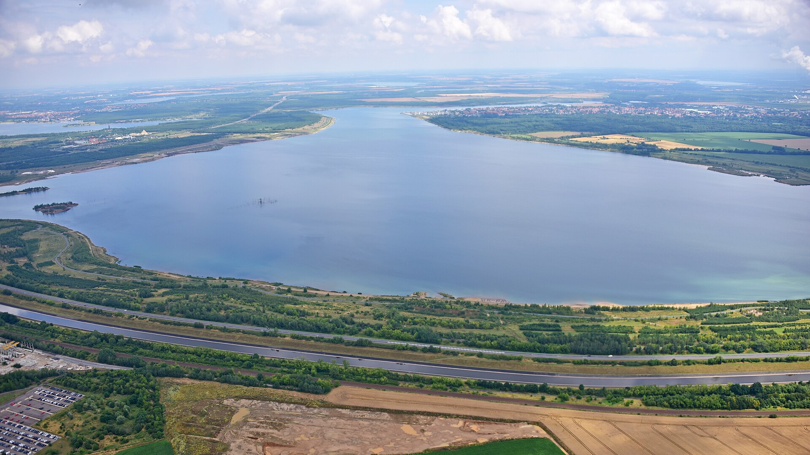
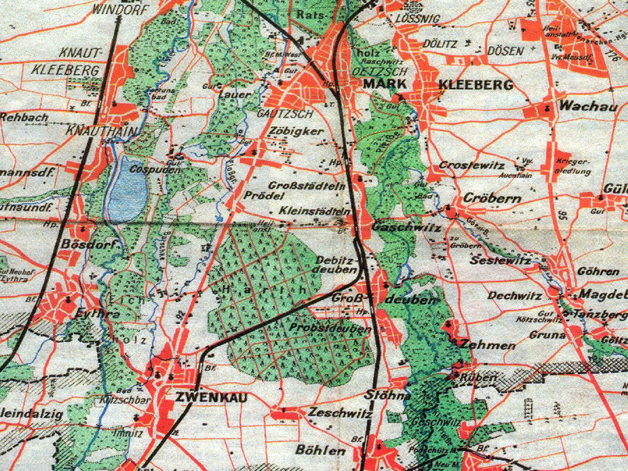

라이프치히 전투 (7) - 자격지심
게시: 2025-07-07T06:30:03+09:00
랑게나우가 작성한 슈바르첸베르크의 작전 계획을 요약하면 다음과 같이 정리됩니다.

(아래에서 언급된 지점들을 연결한 연합군의 집결 위치들을 이은 선입니다. 흔히 라이프치히 전투에서 나폴레옹이 연합군에게 포위된 상태로 싸웠다고들 하지만 사실은 북쪽과 동쪽은 그렇지 않았던 셈입니다.)
1) 블뤼허의 슐레지엔 방면군의 주목표는 슈바르첸베르크의 보헤미아 방면군의 좌익, 즉 서쪽 방면을 나폴레옹의 우회 공격으로부터 보호하는 것. 이를 위해 블뤼허는 할러 및 메르세부르크 방면으로부터 라이프치히 서쪽 약 14km 지점까지 접근하여 나폴레옹을 압박. 2) 귤라이의 오스트리아군 제3군단 2만은 블뤼허의 남쪽인 마르크란슈테트(Markranstädt), 즉 라이프치히의 남서쪽으로 진격하여 블뤼허의 지휘를 받으며 공격. 3) 마르크란슈테트로부터 약 20km 남쪽 지점인 페가우(Pegau), 즉 라이프치히의 남남서쪽 방면에 슈바르첸베르크의 좌익이 잡결. 여기에는 메르펠트(Merveldt)의 오스트리아군 제2군단 및 예비대, 러시아 근위대, 프로이센 근위대 등 총 5만2천을 배치. 4) 페가우에서 동쪽으로 20km 떨어진 에스펜하인(Espenhain)에는 슈바르첸베르크의 우익이 집결. 여기에는 비트겐슈타인, 라에프스키(Nikolay Nikolayevich Raevsky), 골리친(Dmitry Golitsyn) 등의 러시아 군단들과 클라이스트의 프로이센 군단을 배치.

(여기서 라에프스키는 1812년 보로디노 전투에서 라에프스키 보루에서 치열하게 싸웠던 그 라에프스키가 맞습니다. 그는 라이프치히 전투에서 러시아군 제3척탄병군단을 지휘했습니다. 그는 처음엔 자신의 사위이자 전우였던 세르게이 볼콘스키처럼 유럽의 계몽주의와 자유주의에 깊은 관심을 보였으나, 나폴레옹 전쟁 이후 절대 왕정을 고수해야 한다는 우파적 생각으로 기울었습니다. 그러나 세르게이 볼콘스키는 신념을 계속 지켜 1825년 데카브리스트의 난에도 참여했고, 그래서 시베리아 노역형에 처해졌습니다. 그의 딸 마리아는 아버지를 버리고 남편을 택해 스스로 시베리아로 따라가 끝까지 남편과 함께 했고, 상심한 라에프스키는 데카브리스트의 난 이후 4년만에 사망했습니다.)
(라에프스키의 마음를 찢어놓은 딸 마리아입니다.) 5) 에스펜하인에서 동쪽으로 10km 떨어진 폼센(Pomßen)에는 클레나우(Klenau)의 오스트리아 제4군단을 배치하여 더 동쪽인 그리마(Grimma) 쪽에서 혹시라도 있을 나폴레옹의 우회 공격에 대비 6) 러시아군의 최고참인 바클레이는 위의 4)와 5), 즉 우익 전체를 맡아서 지휘. 7) 아직 이동이 늦어 훨씬 남쪽의 켐니츠에 도착한 오스트리아군 제1군단은 서둘러 라이프치히 남쪽 50km 지점인 페니히 방면으로 행군하되, 16일 오전 10시까지는 에스펜하인 남쪽 9km 지점인 보르나(Borna)에 도착하여 예비대 역할을 할 것. 8) 오스트리아 제1군단을 제외한 나머지 모든 군단들은 16일 오전 7시에 일제히 라이프치히를 향해 행군을 개시. 9) 바클레이가 총지휘하는 우익은 눈 앞에 보이는 나폴레옹의 주방어선인 마클리베르크-리베르트볼크비츠 일대를 정면으로 공격. 10) 페가우에 집결했던 좌익은 마클리베르크-리베르트볼크비츠 방어선의 왼쪽으로 우회하여 코네비츠(Connewitz) 방향으로 진격하여 나폴레옹의 우익 후면을 공격. 이 작전안의 핵심을 다시 더 쉽게 정리하면 보헤미아 방면군 우익 7만2천이 나폴레옹의 전면을 공격하는 동안, 좌익 5만2천은 나폴레옹의 우익을 우회 공격하고, 라이프치히 북서쪽의 블뤼허는 자신의 5만4천에 귤라이의 오스트리아 2만까지 합한 7만4천의 병력으로 나폴레옹의 뒤통수를 친다는 것이었습니다. 그러니까 10월 16일에는 대충 약 18만의 병력이 라이프치히의 북서쪽부터 남쪽까지 이어지는 방면에서 일제히 공격에 나서되, 1개 집단은 나폴레옹의 정면에서 모루 역할을 하고, 나머지 2개 집단은 나폴레옹의 측면을 치는 망치 역할을 한다는 작전이었습니다.

(슈바르첸베르크의 공격 계획을 매우 단순화한 그림입니다.) 이 작전안을 돌려본 보헤미아 방면군 사령부에서는 일제히 고개를 저으며 어이없다는 반응이 터져나왔습니다. 톨, 바클레이, 볼콘스키 등 러시아 장군들은 물론이고, 심지어 오스트리아 장군인 라데츠키조차 '이건 아니지'라는 평가를 내렸습니다. 심지어 조미니는 '이 작전안은 나폴레옹이 만들어 준 것인가요?' 라고 비아냥거렸습니다. 대체 어떤 점 때문에 이렇게 이구동성으로 불만을 터뜨렸던 것일까요? 가장 큰 문제는 지형지물이었습니다. 블뤼허의 슐레지엔 방면군이 멀리 떨어져 있어서 단독 작전을 펼쳐야 한다는 점은 그렇다치고, 보헤미아 방면군을 크게 좌익과 우익으로 나눈 것에 대해 장군들은 불만이 많았습니다. 당시 모든 작전에서 좌익-우익 또는 좌익-중앙-우익으로 나누어 공격하는 것은 상식이었으므로 그렇게 나눈 것 자체가 문제는 아니었습니다. 문제는 좌익과 우익 사이에 엘스터와 플라이서 2개 강이 흐르는 습지가 있다는 것이었습니다. 특히 그 두 강 일대를 직접 눈으로 살펴보았던 러시아 장군들은 그 2개 강으로 인해 보헤미아 방면군의 좌익과 우익은 완전히 분리되어 서로를 지원할 수 없을 것이라고 주장했습니다. 특히 이번 작전에서의 핵심 역할인 망치 역할을 맡은 것은 좌익이었는데, 좌익이 진격해야 하는 페가우-츠벤카우(Zwenkau)-코네비츠를 잇는 경로는 그야말로 온갖 호수와 연못, 시냇물이 얽혀 있는 곳으로서, 군대의 진격이 매우 어려운 곳이었습니다. 망치 역할을 하려면 빠른 진격이 핵심이었는데, 하필 그 지점을 통과한다는 것은 어불성설이라는 것이 러시아군 제1의 두뇌인 톨의 냉정한 평가였습니다.

(플라이서강의 위치입니다. 강줄기가 갑자기 뚝 끊기는 이유는 거기서 엘스터강과 합류하기 때문입니다.) 이렇게 강력한 반발이 터져나오자, 당연히 슈바르첸베르크는 랑게나우와 함께 재검토에 들어갔고, 이 작전안에 반대하는 장군들과 긴 회의도 했습니다. 그러나 뜻밖에도 슈바르첸베르크는 이 작전안을 고수했습니다. 슈바르첸베르크는 자신이 직접 '이 지역을 손바닥처럼 꿰차고 있는' 랑게나우와 함께 그 일대를 둘러보았는데, 엘스터와 플라이서 강은 충분히 걸어서도 건널 수 있는 수준이며, 그 일대의 습지를 통과해 행군하는 어려움은 너무 과장되었다고 주장했습니다.

(현재의 지도에 보이는 여러 호수는 후대에 인공적으로 만들어진 것입니다. 가령 저 츠벤카우 호수는 1980년대에 굴착과 관개를 통해 만들어진 것입니다.)

(1813년 당시에는 저런 호수들 대부분이 없었다고 해서 통과가 용이했다고 할 수는 없습니다. 호수 대신 더 처치 곤란한 늪지대가 그 일대에 즐비했습니다. 이 지도는 1950년대의 츠벤카우 북쪽 일대의 지도입니다.)

(현재의 플라이서강입니다. 1813년에는 지금보다 정리정돈이 안 된 모습이었을 텐데, 당시에도 걸어서 건너기엔 어려운 강이었다고 합니다. 특히나 10월 16일경에는 때마침 내린 비 때문에 물이 불어서 걸어서 건널 수는 없었습니다.)
왜 슈바르첸베르크는 이렇게 원래의 작전안을 고집했을까요? 아마도 어정쩡한 자신의 위치에 대한 자격지심 때문 아니었을까 합니다. 그는 분명히 연합군 3개 방면군 중 주력인 보헤미아 방면군의 총사령관이었지만, 누가 봐도 실제 총사령관은 러시아의 짜르 알렉산드르였습니다. 러시아가 연합군 중에서 가장 많은 병력을 기여했고, 오스트리아는 뒤늦게 참전하여 아직 뚜렷한 공적을 세운 것도 없는데도 슈바르첸베르크에게 그렇게 중요한 자리가 주어진 것은 오직 알렉산드르의 대승적 관대함 덕분이었습니다. 알렉산드르는 제6차 대불동맹군을 조직하고 3개 방면군을 편성할 때, 일부러 각 방면군을 국적별로 구성하지 않고 각군마다 러시아-오스트리아-프로이센군이 뒤섞이도록 했습니다. 그는 아우스테를리츠의 경험자로서, 만약 각국 군대가 자기 나라의 이익과 자존심을 생각하기 시작하면 동맹이 곧 무너진다는 것을 뼈저리게 잘 알고 있었던 것입니다. 게다가 그는 3개 방면군의 총사령관들을 모두 비러시아 출신으로 임명함으로써 스스로 이 동맹군에서 러시아의 위상을 겸손하게 만들었는데, 이는 동맹국 중 가장 강국이었던 러시아에 대한 각국의 경계심을 풀어주기 위해서였습니다. 하지만 그 이면에는 누가 방면군 사령관을 하더라도, 실질적인 총사령관은 바로 알렉산드르 자신이라는 자신감이 있었습니다. 그 점은 슈바르첸베르크에게도 분명했고, 실제로 러시아 짜르에게서 내려오는 보이지 않는 압력을 그는 확실하게 느끼고 있었습니다. 그런 상황 속에서 자신의 사령관 데뷔 무대였던 드레스덴 전투가 참패로 이어졌기 때문에, 슈바르첸베르크의 자격지심은 절정에 달한 상태였습니다. 그는 자존심과 자격지심 그 사이 어디쯤에서 길을 잃고, 자신의 판단이 옳다는 것을 굽히지 않았습니다. 슈바르첸베르크가 이렇게 나오자, 톨은 아니나 다를까 곧장 최종 보스인 알렉산드르에게 쪼르르 달려가 고자질을 했습니다. 과연 알렉산드르의 반응은 무엇이었을까요? Source : The Life of Napoleon Bonaparte, by William Milligan Sloane Napoleon and the Struggle for Germany, by Leggiere, Michael V With Napoleon's Guns by Colonel Jean-Nicolas-Auguste Noël https://www.britannica.com/event/Napoleonic-Wars/Dispositions-for-the-autumn-campaign http://www.historyofwar.org/articles/campaign_leipzig.html https://warhistory.org/@msw/article/leipzig-battle-of-the-nations https://www.encyclopedia.com/history/encyclopedias-almanacs-transcripts-and-maps/leipzig-battle-0 https://www.napoleon-series.org/military-info/battles/leipzig/c_leipzigoob1.html https://en.wikipedia.org/wiki/Nikolay_Raevsky https://en.wikipedia.org/wiki/Mariya_Volkonskaya https://de.wikipedia.org/wiki/Zwenkauer_See https://www.leipzigseen.de/die-seen/zwenkauer-see